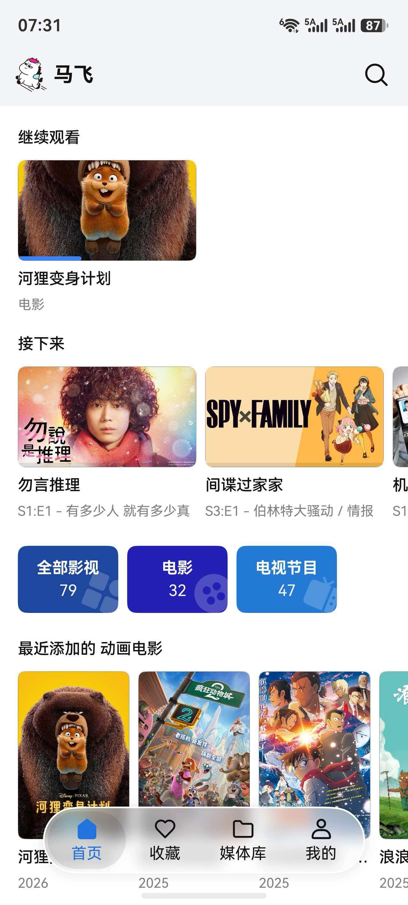
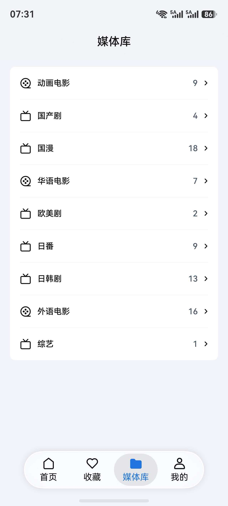
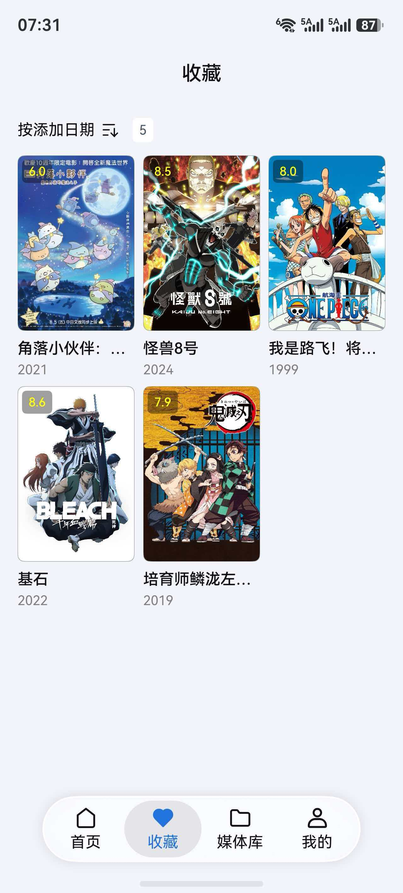

更像应用的首页
首页聚合近期新增、继续观看、媒体库入口，让进入应用后的第一步更明确。
马飞围绕鸿蒙设备重新整理了媒体浏览、剧集选播和播放控制体验。 从首页海报墙、详情页到播放页选集，都尽量做得更接近一款真正的日常影音应用，而不是简单的网页壳。

不是只把 Jellyfin Web 套进客户端，而是把用户真正高频的路径重新打磨： 找片、看详情、进播放页、切换剧集、继续播放、回到上次进度。
首页聚合近期新增、继续观看、媒体库入口，让进入应用后的第一步更明确。
从详情页到播放页，再到选集列表与下一集衔接，尽量减少反复跳转与找入口。
接入 HarmonyOS 播控中心，让暂停、继续播放和后台媒体状态更像原生媒体应用。
针对手机、平板和 PC 形态做适配，不把同一套界面生硬套到所有屏幕上。
连接你自己的 Jellyfin 服务器，继续使用已有的媒体整理方式和家庭观看习惯。
围绕选集、进度恢复、退出上报、不同播放引擎策略等细节持续打磨。
这部分直接展示当前应用界面，而不是用概念稿或占位图来凑。
继续观看、媒体库入口与内容分区集中展示，打开应用就能快速回到上次节奏。
海报、信息概览与操作入口集中在一个页面里，减少反复切换层级。

围绕播放控制、选集、投屏与进度恢复不断优化，重点解决真正影响看片顺手度的问题。

让收藏、追更和回看更容易，不只是一个“能播”的客户端。
马飞想解决的是“Jellyfin 在 HarmonyOS 上用起来不够顺手”的问题。 所以我们优先补的不是噱头，而是看片时最容易卡住体验的那些环节。
当前优先面向手机形态，平板与 PC 版本仍在持续适配中。
应用本身不提供内容，只负责把你自己的媒体库更好地呈现在鸿蒙设备上。
在上架前继续收播放器细节、隐私合规、官网与宣传素材。
当前版本已经具备基础使用能力，正在围绕上架需要的官网、截图、合规材料和播放细节继续收口。
首页、详情页、媒体列表、播放页与投屏相关能力已经具备可演示基础。
围绕比例适配、退出逻辑、选集体验和不同引擎表现继续优化。
官网、介绍截图、应用市场展示文案和外部说明页正在补齐。
当前已经开放华为应用市场邀测入口，正式上架版本仍在准备中。 你可以先参与测试体验版本，也可以通过反馈群和隐私政策页面了解项目状态。
它是一款面向 HarmonyOS 的 Jellyfin 第三方客户端，用来连接你自己的 Jellyfin 服务器并播放媒体内容。
不会。马飞只负责连接和呈现你自己的媒体库，不提供任何内容服务。
可以通过华为应用市场邀测链接体验当前版本，正式公开上架入口仍在准备中。
可以通过页面底部的常见问题文档和反馈群联系，播放器与页面体验仍在持续收集反馈优化。